iPhone · iPhone Duo · iPad · Apple TV
Pool Position
A scorebook for two rivals who play real pool, week after week.
Score every set at the table, keep the all-time record, remember the halls and play your own music. Next to it, a 3D pool game that keeps score in the same book, with your phone as the cue. It plays on the phone alone, on two phones, or on the Apple TV.
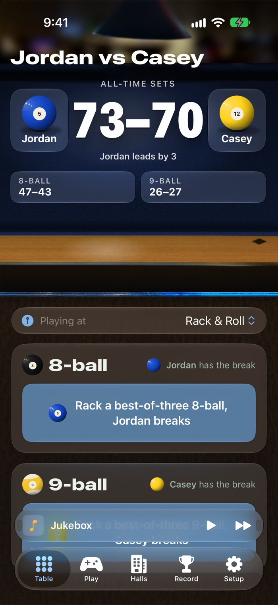
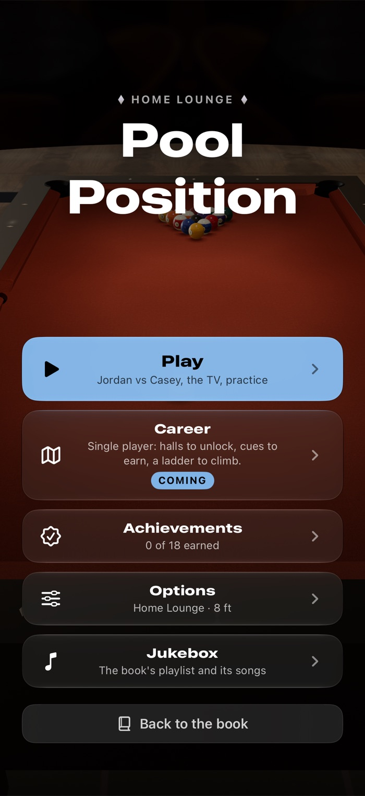
Tap who won the rack. That's it.
Built to be used with a cue in one hand. The whole set fits on one screen, with nothing to scroll.
- Who breaks is shown big until the first rack is won, so there's no arguing over it.
- Solids or stripes for each player, and the wild moments: 8 on the break, ran the table, scratched on the 8, golden break.
- Undo the last rack or scrap the set, kept well away from the winner buttons.
- The score sits on the Lock Screen as a Live Activity, with "won the rack" buttons, and both phones update at once.
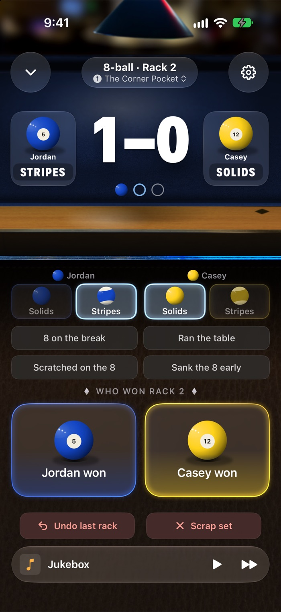
The rivalry, all time
Every set goes in the book, so the record settles the arguments.
- Sets and racks won, split by 8-ball and 9-ball.
- Your record on solids versus stripes, and how often each wild moment happened to whom.
- Trends: the race over time, by month and by hall.
- History of every set: the score and where it was played.
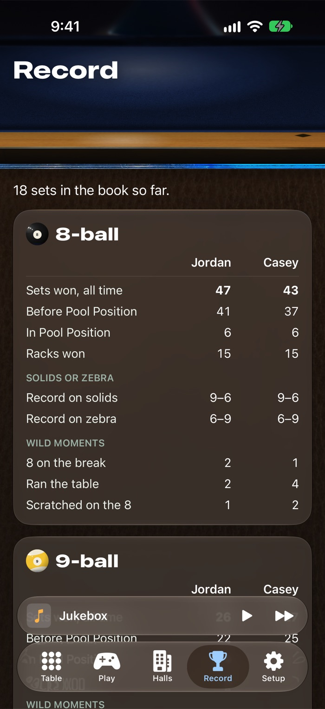
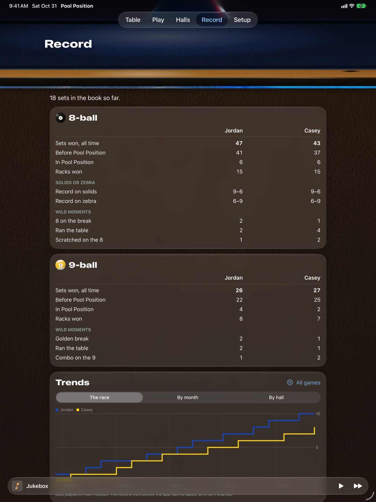
Your hall, your playlist
The places you play are part of the rivalry, so the book keeps them.
- Halls with photos, notes and a map, and the record at each one.
- The nearest hall is picked for you when a set starts.
- A jukebox bar on every page: an Apple Music playlist for the book that plays on both phones.
- The look comes from real photos of a pool hall: a table seen from the near rail, lit by a lamp that shifts as you tilt the phone. Pick the cloth color.
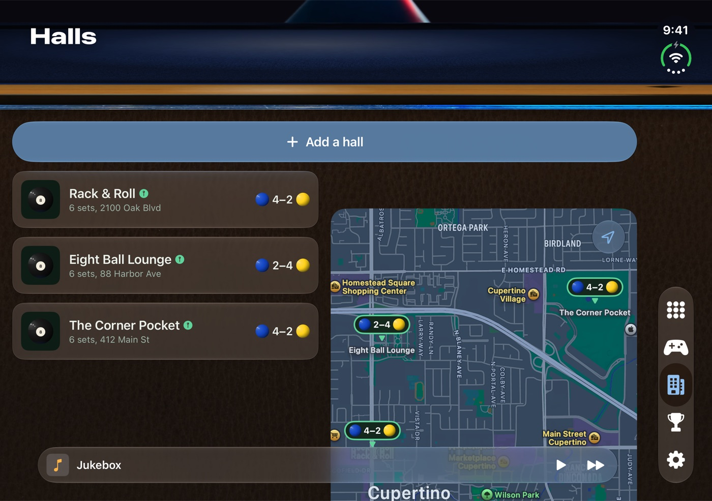
Made for the foldable first
Pool Position was designed on the iPhone Duo and fits every way it folds.
- Folded: the whole app on the cover screen, tabs in the side strip.
- Half open like a laptop during a set: the score up top, the buttons below, nothing on the fold.
- Open flat: a tablet layout with room for the record, the history and the map side by side.
- Just as much at home on a regular iPhone and on iPad.
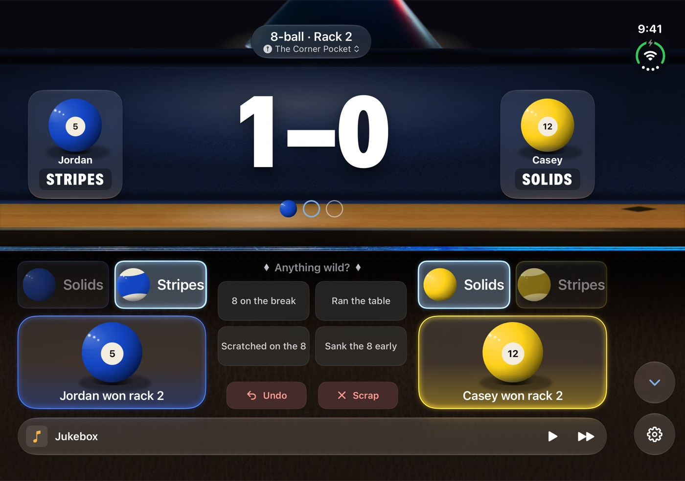
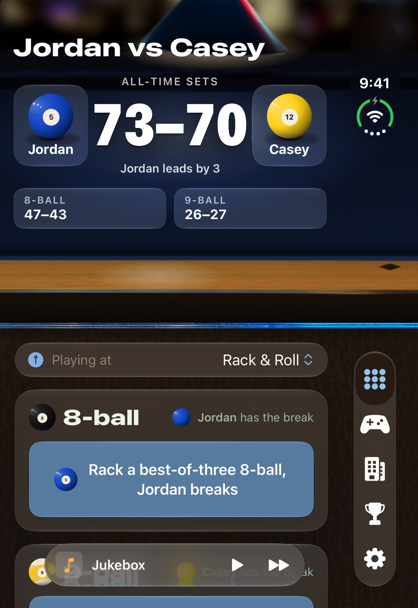
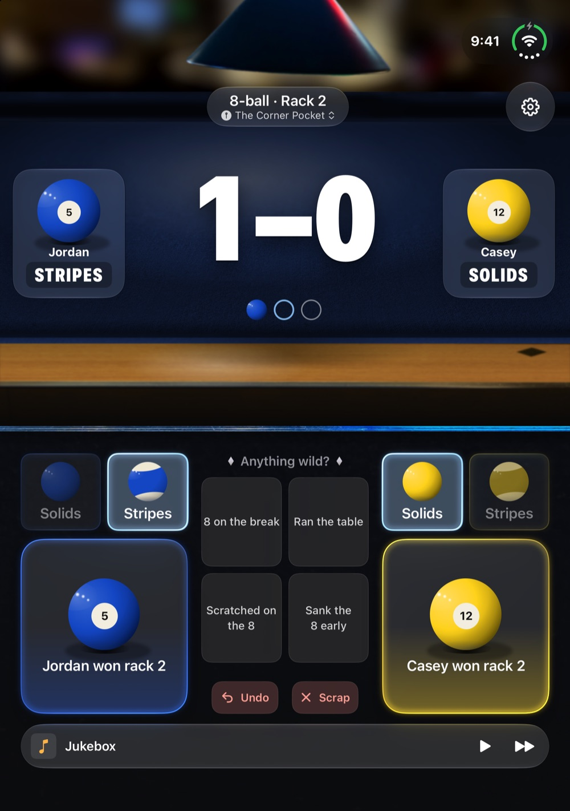
Then there's the game.
There are plenty of pool games. Most are built around coins and cue upgrades, or swipe to shoot. This one is tied to the pool you actually play: the same rival, the same book, the same playlist. And the stroke itself is the skill.
One menu, over the table
The game opens on a menu laid over the live table, the same on the phone, the Apple TV and a phone used as a controller.
- Play: pass and play on one phone, two phones, the Apple TV, or practice on your own.
- Options: your cue, the cloth colour, the hall and a 7, 8 or 9 ft table, the aiming guide, sound and a larger HUD.
- Achievements, and the jukebox with the book's playlist.
- Back to the book is one tap away.
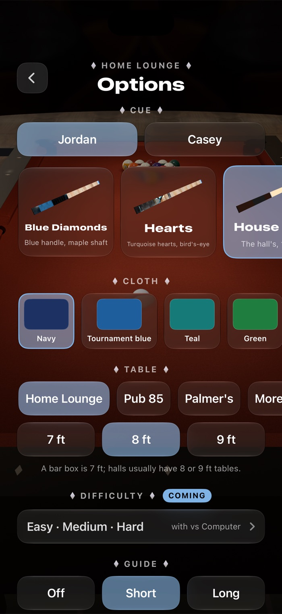
Pull back, push through straight
You don't swipe a power meter. You pull back on the stroke pad and push through, like a real cue, and the game reads how straight you were and whether you followed through. After every shot it tells you in one line.
3.0 m/s · medium. Straight, followed through.
Swipe the line up for more: the cue ball's real speed, how far off line the stroke went and any side you put on.
Walk around the table to line up, set the cue's angle and put spin on with the tip. Watch any shot again from the overhead view.
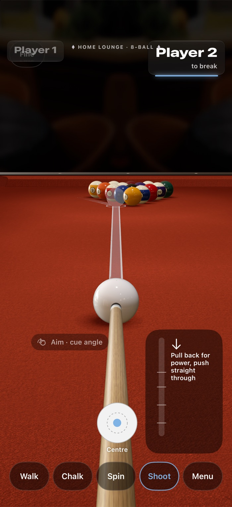
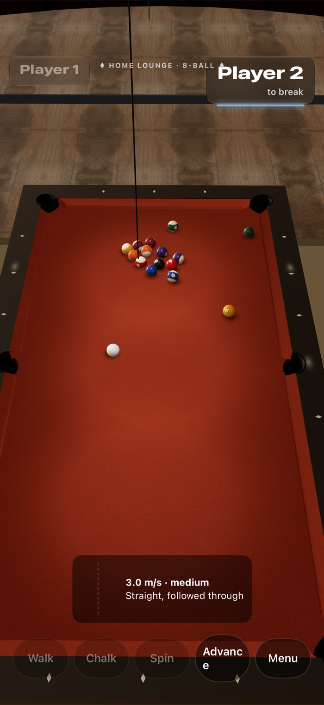
Help when you want it, chalk when you need it
- An aiming guide you set per player: Short shows where the cue ball meets the first ball and where that ball heads; Long runs the real physics for the shot you're about to play, through one cushion. Or turn it off.
- A pot lights the object ball's line green, a scratch lights the cue ball's red.
- Chalking: the tip comes up in front of you, you pick the cube up off the rail and rub it on with your finger, and you can see how much chalk is on.
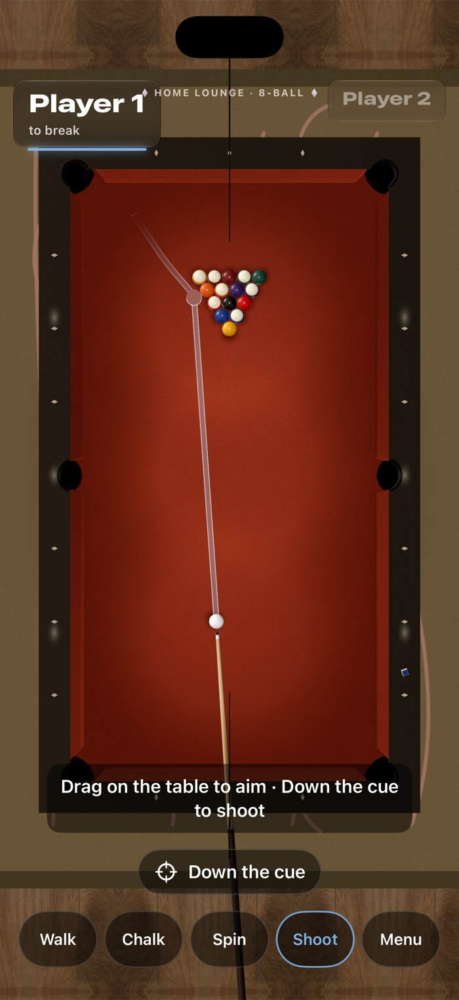
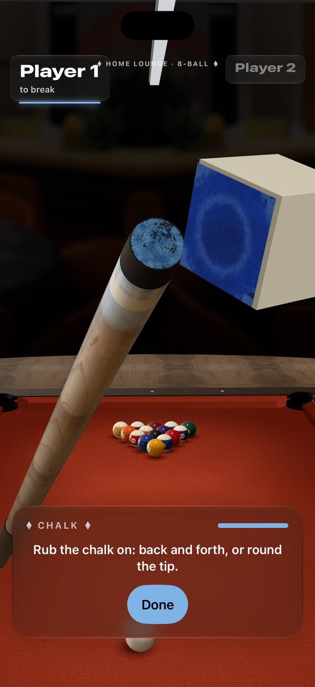
Real rules, and it counts in the book
- 8-ball under APA rules, or 9-ball with a proper legal break.
- Play a set for the book: a rack goes in the book once you count it, and it shows in Record with a controller beside it.
- Solids and stripes and the wild moments come from the game itself, the same way you'd tag them at a real table.
- Achievements for the shots people talk about: a bank, a kick, a combo on the 9, a golden break, break and run. They show on the game-over card. Practice earns none.
- Rematch with the winner breaking, concede a lost rack, and real pocket jaws: a ball that clips one can rattle out.
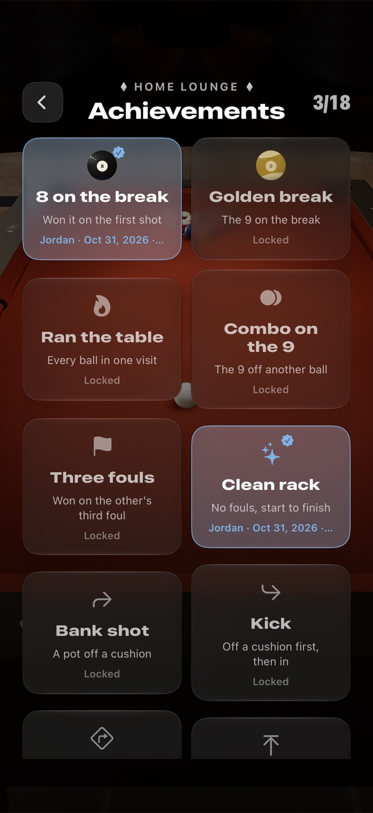
Couch pool. Your phone is the cue.
Open Pool Position on the Apple TV and the table fills the big screen. Each iPhone joins with a four-digit code, then you aim and stroke on the phone in your hand: Walk, Chalk, Spin, Shoot and Menu along the bottom, the same as playing on the phone alone. If one phone is away, the other can take the shot.
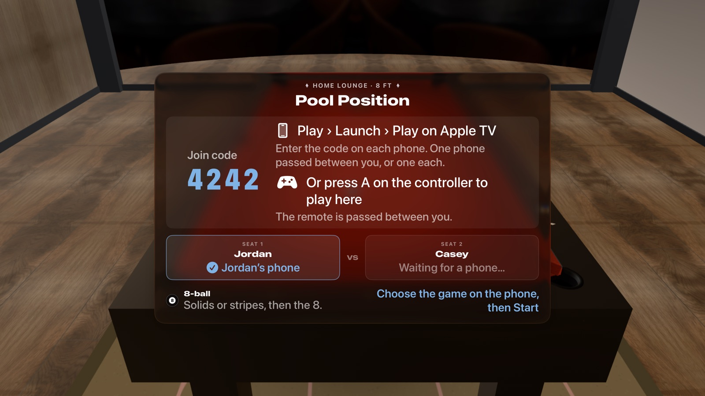
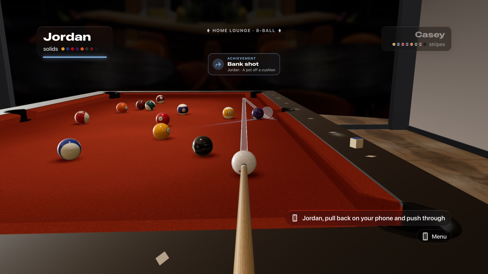
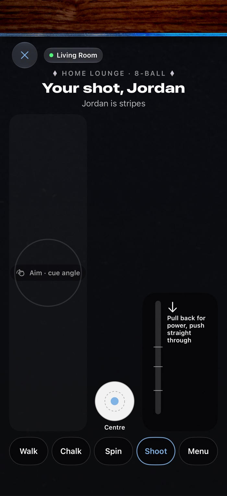
- On the TV, each player has a corner: their name, solids or stripes, and the balls they still need. A ring fills round the cue ball as you pull back on the phone, and the stroke line shows under the shooter's corner after the shot.
- No phone handy: play on the TV with the Siri Remote or a game controller.
- No TV: two phones play each other on one table, one phone hosting and the other joining with the code.
- The book's playlist plays on the TV during the game, if the Apple TV is signed in to Apple Music.
Dressed from real photos
- The balls are painted from photos of a real set: the colours, the number discs, the ivory.
- The cloth's nap, the rails and the pockets come from photos of real tables, and the pockets are cut to the same size the physics plays.
- Two cues scanned from real ones, alongside the house cue. Each player picks theirs in Options.
- Three halls to play in. The newest, a modern home lounge, is a first pass and still being built.
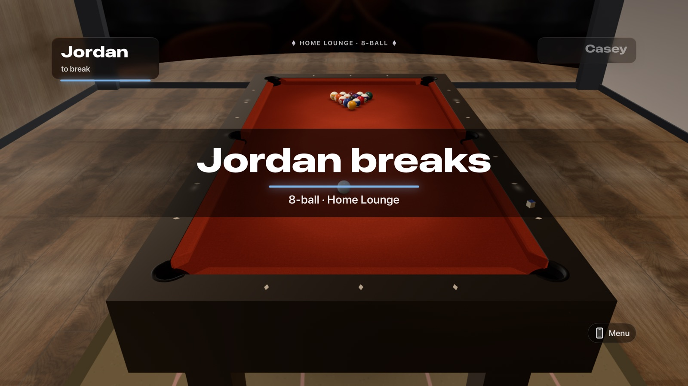
How the game works
Physics you can check
Pool players are picky, so the game doesn't fake it. The simulation is written in plain Swift and follows published models of how pool balls really behave, ported from the open-source pooltool project and tested against its reference shots. It runs on a fixed 1 millisecond step, so the same shot always plays out the same way, and the 3D view only draws what the physics decides.
It has to hold 60 frames a second on every device it runs on.
About this project. Pool Position is a personal project, built for one real rivalry and shared freely. The scorebook is free; the game is in TestFlight, still in testing and changing every week. There's more about the app, plus privacy and support, at pool.joshramey.com.
Screenshots are real: build 1.2 (45) running in Apple's iPhone, iPhone Duo, iPad and Apple TV simulators, with a sample book. Jordan and Casey are made-up players.